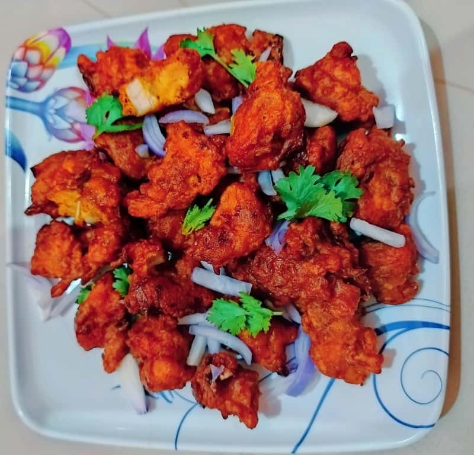

Chicken Pakoda

Description
Chicken Pakoda is easily the most eaten non vegetarian evening snack. It goes well as a side dish
too. If you see a crowd flocked around a food cart, they are most likely eating chicken pakoda.
Ingredients
- Boneless Chicken - 500 grams chopped finely
- Red Chilli Flakes - 1 tbsp
- Chilli Powder - 1 tbsp
- Kashmiri Chilli Powder - 1 tbsp
- Lemon Juice - 3 to 4 tbsp
- Turmeric Powder - 1 tsp
- Cumin Powder - 1 tsp
- Garam Masala Powder - 2 tsp
- Ginger Garlic Paste - 1.5 tbsp
- Salt to taste
- Egg - 1
- Gram Flour/ Kadalai Mavu / Besan - ¼ cup
- Rice Flour / Arisi Mavu - ¼ cup
- Corn Flour / Cornstarch - ¼ cup
- Oil for Deep Frying
Steps
- Take all the ingredients in a bowl, except eggs and flour. Mix really well. Leave this to marinate for 1 to 2 hours.
- Now just before you fry, add in eggs and flour and mix well.
- Heat oil for deep frying. add chicken in and fry till golden.
- Drain it and serve with ketchup.